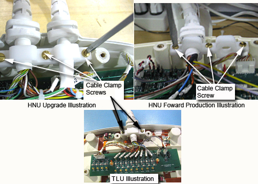
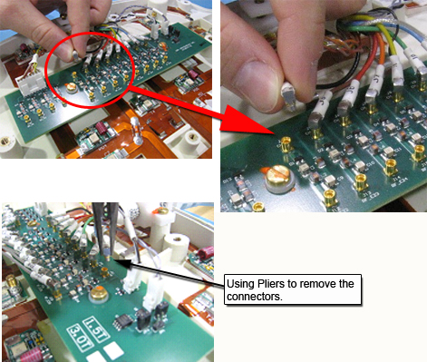
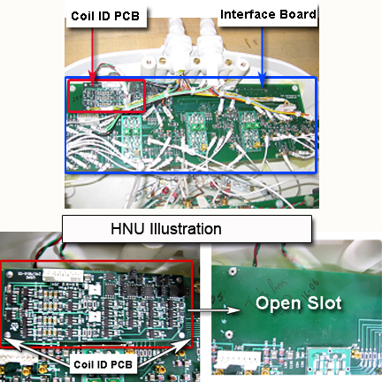
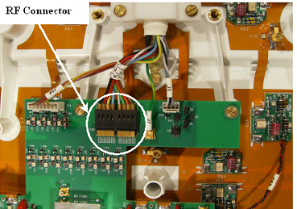
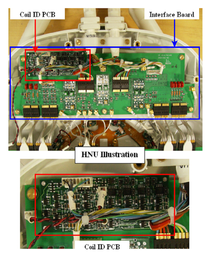

Operating Documentation
Direction 5440000, Rev# 5
Signa HDxt Service Methods
Module Version 9.0, Version Date 10/27/09
Operating Documentation |
| Required Persons | Preliminary Reqs | Procedure | Finalization |
|---|---|---|---|
| 1 | Not Applicable | 40 mins | Not Applicable |
Follow this process to change the system cable for coils that have a cable available as a spare part. This process will be the same whether replacing the coil or the cable.
| Item | Qty | Effectivity | Part# | Manufacturer | |
|---|---|---|---|---|---|
| Standard tool kit – Flathead screwdriver and pliers | 1 | - | - | - | |
| Item | Qty | Effectivity | Part# | Manufacturer | |
|---|---|---|---|---|---|
| Output Cable-Hypertronics (8-Channel “B” connector) for the Head Neck section with the Coil ID Board | 1 | HNS Rev. 2 Upgrade with the Coil ID Board | 2417356 | - | |
| Output Cable-bendix without the Coil ID Board. | 1 | HNS Rev. 2 Upgrade without the Coil ID Board | 2417357 | - | |
| Output Cable (16-Channel “B” connector) for the Head Neck Section with Coil ID Board. | 1 | HNS Rev. 2 Forward Production with Coil ID Board | 2417359 | - | |
| TL Unit Cable | 1 | HNS Rev. 2 without the Coil ID Board | 2417358 | - | |
| 8-CHANNEL HNS EXC III UPGRD SYS CABLE FRU | 1 | HNS Rev. 3 Upgrade with the Coil ID Board | 2423319 | - | |
| 8-CHANNEL HNS EXC II SYS CABLE FRU | 1 | HNS Rev. 3 Upgrade without the coil ID Board | 2423317 | - | |
| 16-CHANNEL EXC III HNS FWD PRD SYS CBL FRU | 1 | HNS Rev. 3 Forward Production with Coil ID Board | 2423320 | - | |
| HNS TL UNIT CABLE FRU | 1 | HNS Rev. 3 without the Coil ID Board | 2423318 | - | |
| 16-Channel P-connector HNS Discovery System Cable FRU | 1 | HNS P-connector Discovery with Coil ID Board | 2424269 | - | |
| ||||
Please refer to the cable FRU list above in Replacement Parts.
| ||||
| ||||
| Observe anti-static precautions: Use wrist strap and ESD workstation (ESD mat connected to ground and place to connect ESD wrist strap). | ||||
Put an ESD wrist strap on and ground.
Illustration 1: ESD Wrist Strap On

Unscrew the bottom cover and remove from coil. Retain the original screws used.
Unscrew the cable clamp from the coil as shown in Illustration 2. Retain the original screws used.
Illustration 2: Removing the Cable Clamp

Identify and remove RF connectors (CH in Head Neck Unit (HNU) , J in Thoracic Lumbar Unit (TLU) ) from interface Board, see Illustration 3. Pliers may be necessary for removal of the MMCX connectors, as they may be difficult to unplug. This will help prevent accidental breakage of the cables.
Illustration 3: RF Connectors in the HNU

Illustration 4: Using Pliers for Removal of Connectors

Illustration 5: RF Connectors for the Thoracic Lumbar Unit

Identify and remove DC connectors (DC) from Interface Board and Coil ID PCB. See Illustration 6 through Illustration 8.
Illustration 6: DC Connectors: Forward Production Coil (1 System Cable) Head Neck Unit (HNU)

Illustration 7: DC Connectors: HNU Illustration (2 System Cables) (Upgrade Specific)

Illustration 8: DC Connections: TLU

Remove the system cable (with or without the coil id).
Refer to the Replacement Parts section, if the cable FRU is with the coil id; remove the coil ID PCB from Interface Board (proceed to the next step). If the cable FRU exists without the Coil ID Board, then remove only the cable.
Identify the Interface Board Assembly and the coil ID PCB located on the Interface Board (Head Neck Unit (HNU) Only). Carefully remove the Coil ID assembly. See Illustration 9.
Illustration 9: Interface Board and Coil ID PCB Locations

Install the new system cable.
Align the cable clamp of the cable into the notch of former slot. Screw down cable clamp using original screws. See Illustration 2.
If applicable from Step 7: Mount the new coil ID PCB assembly in the open slot on the Interface Board (HNU Only). See Illustration 9.
Connect RF connectors to Interface Board. Verify that all labels on the connectors match those on the Interface Board. See Illustration 3.
Connect DC connectors to Interface Boards and coil ID PCB (Coil ID PCB for HNU Only). DC connector “S1” connects to J55 on the coil ID PCB. DC connector “S2” connects to J56 on the coil ID PCB. Verify that all labels on the connectors match those on the Interface Board. See Illustration 6.
Replace cover. Use original screws to fasten cover.
| ||||
Please refer to the cable FRU list above in Replacement Parts.
| ||||
| ||||
| Observe anti-static precautions: Use wrist strap and ESD workstation (ESD mat connected to ground and place to connect ESD wrist strap). | ||||
Put an ESD wrist strap on and ground.
Illustration 10: ESD Wrist Strap On
Unscrew the bottom cover and remove from coil. Retain the original screws used.
Unscrew the cable clamp from the coil as shown in Illustration 11. Retain the original screws used.
| NOTE: | When re-installing components, tighten all screws snugly, but do not over-tighten. The recommended torque is 10 in-lbs for M4 screws and 15 in-lbs for M5 screws. |
Illustration 11: Removing the Cable Clamp

Identify and remove ganged RF connectors from interface Board. See Illustration 12.
Illustration 12: RF Connectors in the HNU

Illustration 13: RF Connectors for the Thoracic Lumbar Unit

Identify and remove DC connectors (DC) from Interface Board and Coil ID PCB. See Illustration 14 through Illustration 16.
Illustration 14: DC Connectors: Discovery and Forward Production Coil (1 System Cable) HNU

Illustration 15: DC Connectors: HNU Illustration (2 System Cables) (Upgrade Specific)

Illustration 16: DC Connections: TLU

Identify and remove GND connectors from interface board. See Illustration 17. Pliers may be necessary for removal of the PCX connectors, as they may be difficult to unplug. This will help prevent accidental breakage of the cables. See Illustration 18.
Illustration 17: GND Connectors

Illustration 18: Using Pliers For Removal of Connectors

Unscrew the Kevlar™ termination ring as shown in Illustration 19. Retain original screw used.
Illustration 19: Kevlar™ Termination Screw

Remove the system cable (with or without the coil id).
Refer to the Replacement Parts section, if the cable FRU is with the coil id; remove the coil ID PCB from Interface Board (proceed to the next step). If the cable FRU exists without the Coil ID Board, then remove only the cable.
Identify the Interface Board Assembly and the coil ID PCB located on the Interface Board (Head Neck Unit (HNU) Only). Carefully remove the Coil ID assembly. See Illustration 20.
Illustration 20: Interface Board and Coil ID PCB Locations

Install the new system cable.
If applicable from Step 4: Mount the new coil ID PCB assembly in the open slot on the Interface Board (HNU Only). See Illustration 20.
Align the cable clamp of the cable into the notch of former slot. Screw down cable clamp using original screws. (Cable clamp screws are 12 mm in length for the TLU and 10 mm in length for the HNU) See Illustration 11.
Connect RF connectors to Interface Board. Verify that all labels on the connectors match those on the Interface Board. See Illustration 12.
Connect DC connectors to Interface Boards and coil ID PCB (Coil ID PCB for HNU Only). DC connector “S2” connects J12 located on the 11 channel feedboard to J56 located on the coil ID PCB. DC connector “S1” connects J70 located on the Interface Board to J55 located on the coil ID PCB. Verify that all labels on the connectors match those on the Interface Board. See Illustration 14.
Connect GND connectors to the Interface Board. Verify that all labels on the connectors match those on the Interface Board. See Illustration 17.
Screw down Kevlar™ termination ring using original screw. (Kevlar™ termination screws are 10mm in length for both the TLU and HNU) See Illustration 19.
For forward production coils, ensure that jumpers (red suitcase) J5, J40, J41, J55, J28, J8, and J39 are removed from cable interface (MUX) board before scanning.
Replace cover. Use original screws to fasten cover.
Perform a good bye scan with this coil to confirm that the repaired coil operates properly.